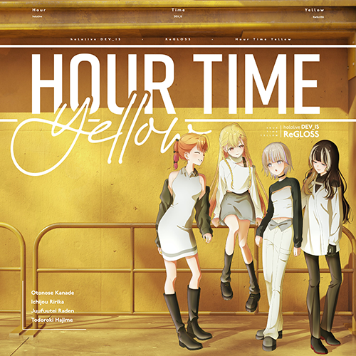

Hololive · MV考察
ReGLOSS - アワータイムイエロー
過去的每分每秒都成就了我們，秋季則象徵著一個新的循環，新的開始。從懵懂無知的新人蛻變，歷經兩年淬鍊，全新的ReGLOSS在此刻登場。
2026.04.06

過去的每分每秒都成就了我們，秋季則象徵著一個新的循環，新的開始。從懵懂無知的新人蛻變，歷經兩年淬鍊，全新的ReGLOSS在此刻登場。
這是一篇關於遊戲開發的文章。可以是開發心得、技術分享、或者遊戲設計理論的探討，任何你在製作遊戲的過程中想記錄下來的事情都很適合放在這裡。
這是一篇關於網頁設計的文章。可以分享設計過程、CSS 技巧、使用者體驗心得，或是這個網站本身的製作過程都很適合記錄下來。
另一篇 Hololive 相關文章的摘要。用來展示同一分類下有多篇文章時，篩選功能如何運作。
第二篇遊戲開發文章的摘要。可以是 Godot、Unity、或任何遊戲引擎的使用心得，也可以是遊戲機制設計、關卡設計等等的思考過程。